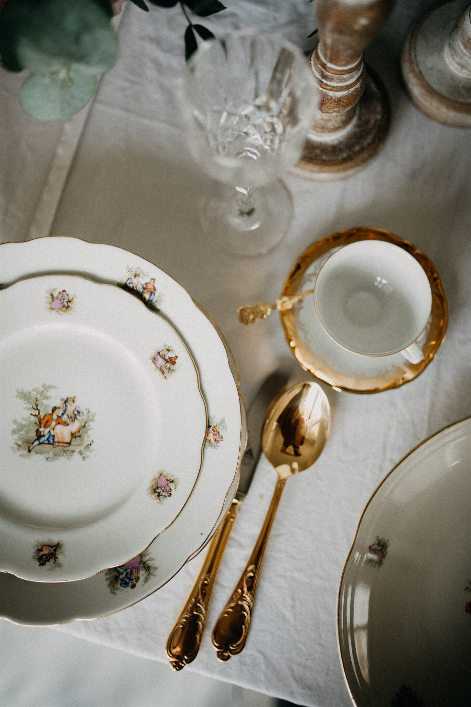
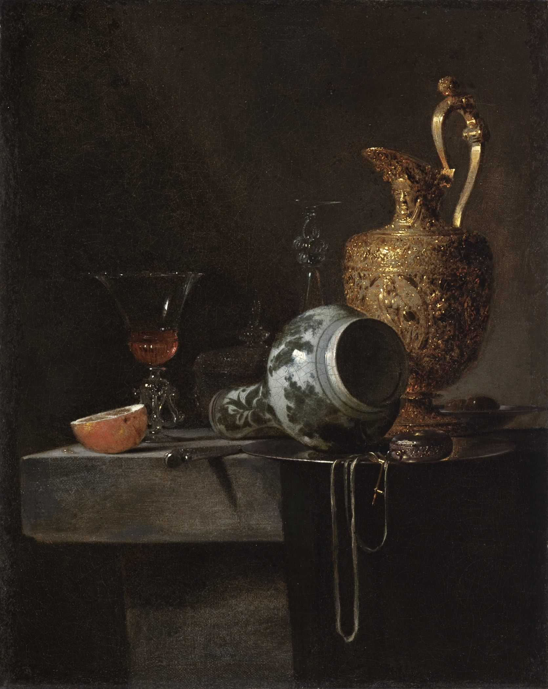
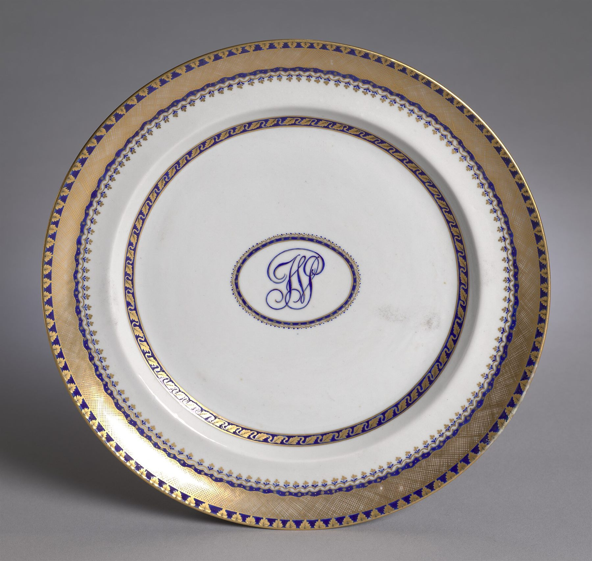
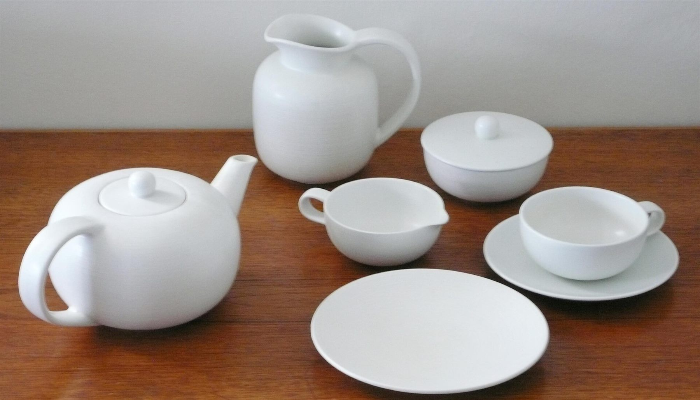
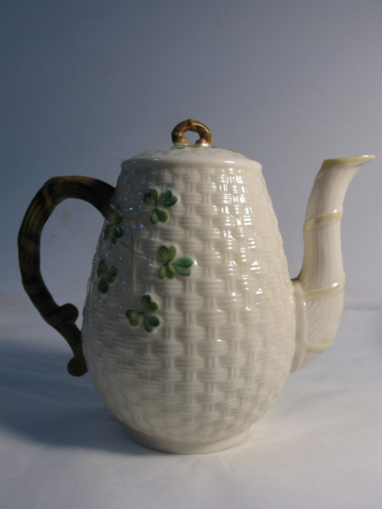
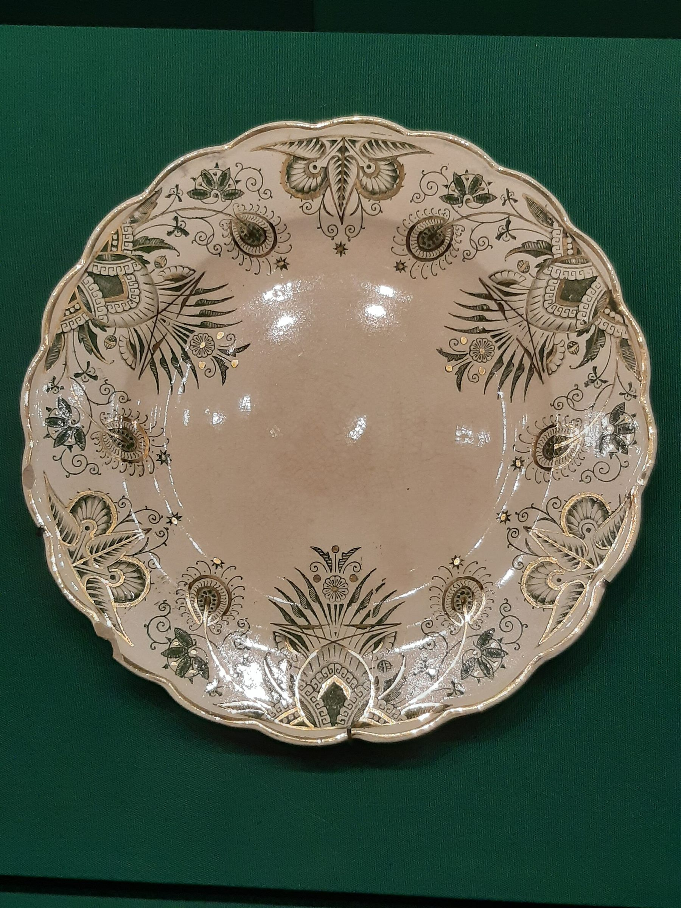
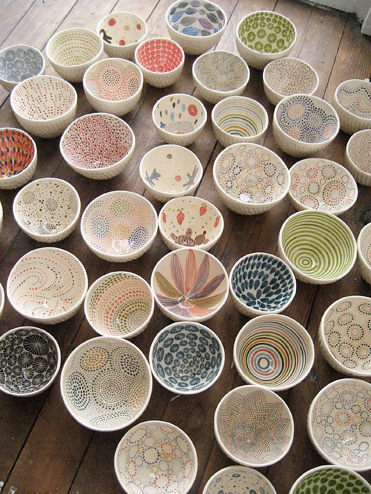
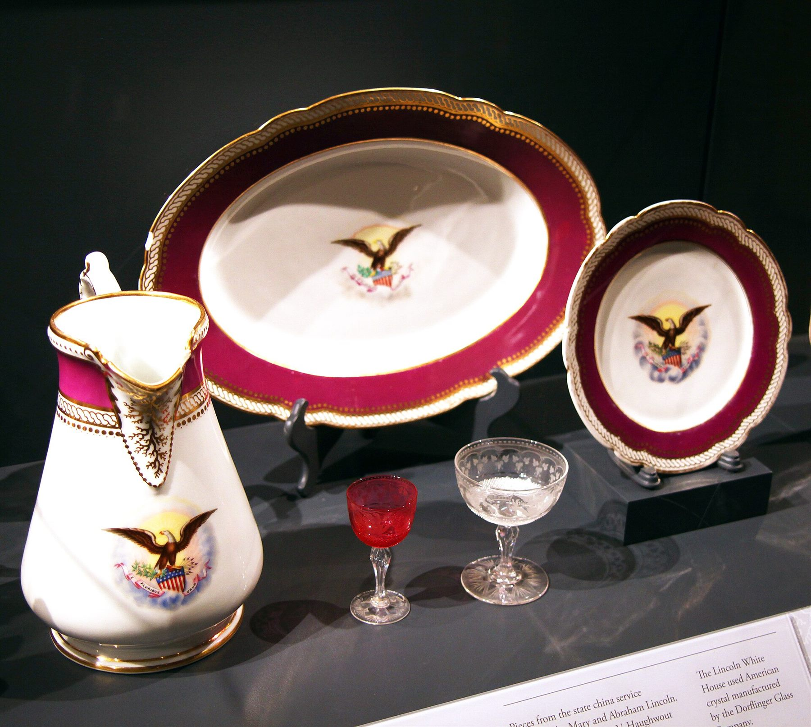
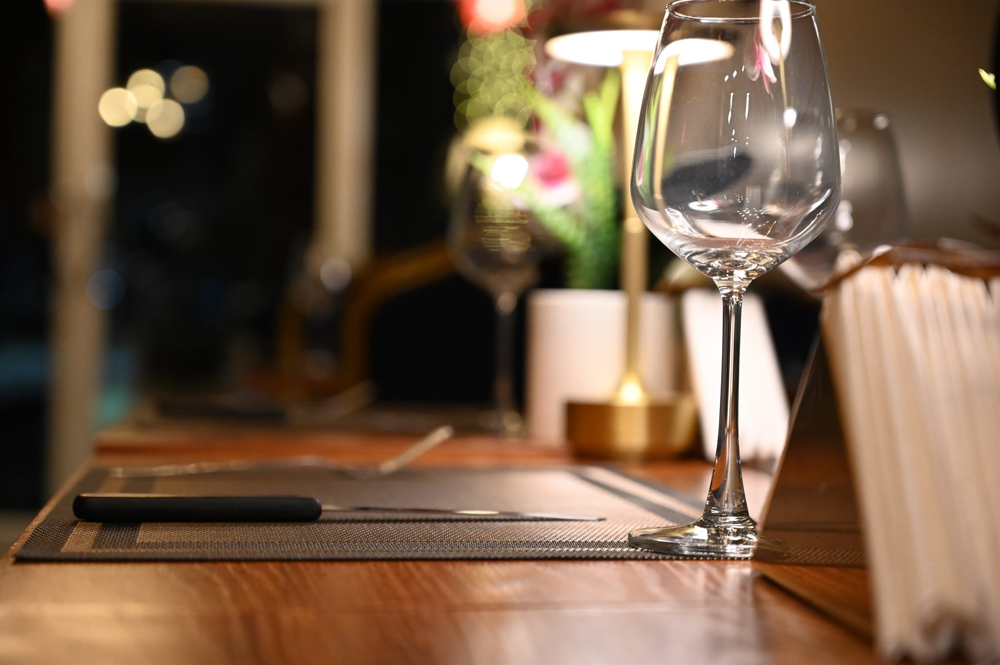

Фарфор
Костяной фарфор с содержанием золы 45 % — тонкий, звонкий, просвечивающий на солнце.
18 сервизов
С 1847 года · Лиможский фарфор
Сервизы ручной работы из костяного фарфора, хрусталя и серебра. Каждый предмет проходит девятнадцать этапов и руки сорока двух мастеров.
Философия
Каждая тарелка ÉCLAT рождается из смеси каолина, полевого шпата и кварца — рецепта, который в нашей мануфактуре не меняли с середины XIX века. Обжиг при 1400 °C делает черепок белым и прозрачным на просвет, а золочение наносится кистью вручную: одна кайма — сорок минут работы мастера.

Коллекции
Костяной фарфор с содержанием золы 45 % — тонкий, звонкий, просвечивающий на солнце.
18 сервизовРучная огранка бокалов и графинов. Свинца 24 % — отсюда вес, блеск и чистый звук.
26 предметовПриборы 925-й пробы с гравировкой на черенке. Полируются вручную до зеркала.
9 линийМалые серии от приглашённых мастеров: неровная кромка, живая глазурь, характер.
ограниченный выпускКаталог
Шесть позиций из текущей коллекции. Полный ассортимент — 240 наименований.

хитСервиз столовый, 24 предмета

Набор чайный, 12 предметов

Чайник заварочный, 900 мл

Тарелка обеденная, ручная роспись

Коллекция пиал, 6 предметов

лимитСервиз парадный, 60 предметов

Мастерская
От сырой массы до упаковки проходит 34 дня. Сократить этот срок нельзя — фарфор не терпит спешки.
Жидкую массу заливают в гипсовую форму. Гипс вытягивает влагу, на стенках нарастает черепок нужной толщины.
Первый проход печи при 900 °C. Изделие теряет 14 % объёма и становится пористым — готовым принять глазурь.
Кобальт под глазурь, золото — поверх. Кайму ведут одним движением: исправить линию уже невозможно.
1400 °C, 26 часов. Глазурь сплавляется с черепком в одно целое — отсюда прозрачность и звон.
Отзывы
Заказывала «Ар-Деко» на серебряную свадьбу родителей. Коробку открывали всей семьёй — и минут пять просто молчали. Золото не «жёлтое», а тёплое, как на старых сервизах бабушки.
Держу ресторан на двенадцать столов. За два года ни одного скола на кромке, хотя посудомойка работает по восемь циклов в день. Для меня это главный аргумент.
Приехала в мастерскую посмотреть, как наносят кайму. Мастер вёл линию сорок минут и ни разу не отвёл руку. После такого цена вопросов не вызывает.
Оставьте почту — консультант пришлёт подборку из трёх коллекций с учётом размера стола, числа персон и повода.